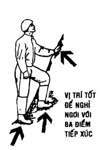
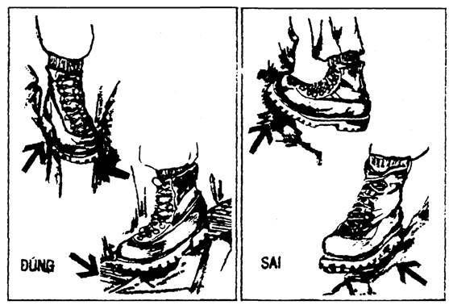
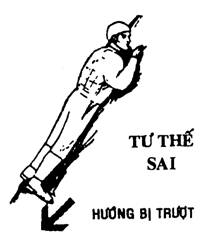
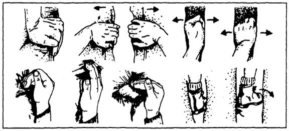
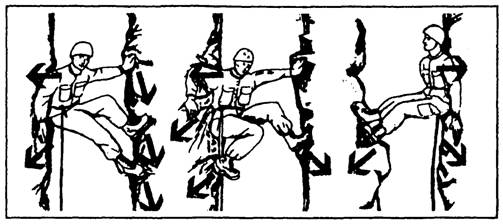
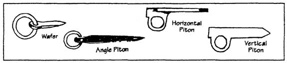
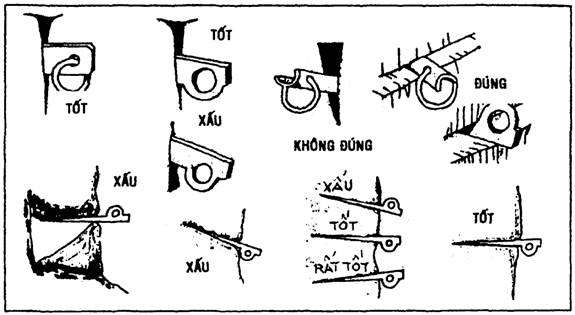
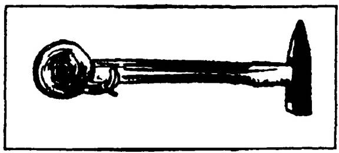
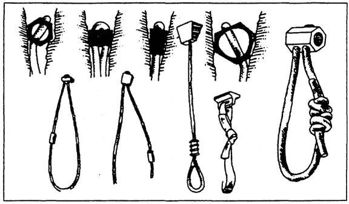

Đây là một chướng ngại rất nguy hiểm và khó vượt qua, nếu các bạn gặp phải trên lộ trình di chuyển. Trừ phi các bạn là vận động viên leo núi, hoặc đã được huấn luyện cẩn thận, và trang bị đầy đủ, thì mới nên cố gắng để vượt, bằng không thì nên đi vòng tìm một con đường khác. Vì ngay cả những nhà leo núi chuyên nghiệp cũng không ít người đã phải đánh đổi mạng sống của mình, hay bị mang thương tật suốt đời, khi cần chinh phục những vách đá cheo leo.
Để có thể leo lên những vách đá, trước tiên, các bạn cần phải luyện tập cẩn thận từ những vách đá thấp, dễ leo, dần dần lên cao, và tăng mức độ khó hơn. Có hai cách leo vách đá:
1. Leo tay không.
2. Leo có trang bị đầy đủ.
LEO TAY KHÔNG
Khi leo vách đá bằng tay không, điều cần thiết là các bạn phải có một thể lực dẽo dai, một tinh thần cương nghị… Và quan trọng nhất là các bạn phải biết cách giữ thăng bằng cơ thể. Đây là một môn luyện tập kết hợp giữa sự thăng bằng của người đi dây và sự thận trọng của người tháo gỡ mìn bẫy.
Dưới đây là những điều cơ bản của kỹ thuật leo vách đá
• Biết nghiên cứu địa hình tổng thể để chọn một lộ trình tốt nhất
• Tay chân của các bạn lúc nào cũng phải có 3 điểm tiếp xúc với vách đá (2 tay một chân hoặc 2 chân một tay).

• Khi leo bằng tay không thì không nên mang găng tay, nhưng khi leo với dây thừng thì phải mang để tránh phồng dộp tay.
• Trọng lượng cơ thể nằm ở trung tâm của bàn chân. Bàn chân chịu toàn bộ sức nặng của cơ thể, tay giữ thăng bằng.
• Đế giầy tiếp xúc với vách đá càng nhiều càng tốt. Không nên chỉ bám ở đầu mũi giầy hay cạnh của giầy.

• Khi tạm nghỉ, giữ vị trí làm sao cho nơi bám của bàn tay nằm ngang với ngực. Vì với tư thế nầy, các bạn dễ giữ cho cơ thể thăng bằng theo ý muốn, trong khi tay được nghỉ ngơi tối đa.
• Không nên nằm sát tạo sự tiếp xúc tối đa vào vách đá (vì ở tư thế nầy, các bạn rất dễ bị trượt té), mà nên giữ cho trọng lực và trọng lượng nằm giữa hai bàn chân của các bạn.

• Di chuyển chậm chạp, nhịp nhàng, cân nhắc, thư giãn …
• Vạch sẵn trên lộ trình những bước dự kiến tiếp theo, và cố di chuyển theo những bước đó.
• Tận dụng các điểm bám cho bàn tay, các điểm tựa cho bàn chân có sẵn trong tự nhiên.

• Tránh chồm, vượt những khoảng cách xa mà kết thúc với tư thế xoải tay chân như chim.
• Khi leo lên hoặc xuống một vách núi hẹp, giếng, hang động nhỏ… các bạn phải biết cách sử dụng mông, lưng, chân, tay, vai, đầu gối…

NHỮNG ĐIỀU CẦN GHI NHỚ:
• Bên sự an toàn mong manh, các bạn không nên liều lĩnh vượt quá giới hạn khả năng của mình.
• Phải dùng các loại dây chuyên dụng, đúng cỡ, đúng cách.
• Không ôm nhau trên vách đá
• Ướm thử các gò đá trước khi đặt toàn bộ trọng lượng lên.
• Đừng gỡ những gò đá đã có sự liên kết
• Không nên sử dụng đầu gối, cùi chỏ, mông … (trừ phi các bạn leo trong khe núi hẹp…)
• Không nên leo đơn độc một mình.
• Không nhảy phóng, chụp bám bất thình lình.
• Tránh những nơi đá có rêu phủ, ẩm ướt
• Lau chùi đế giầy cho sạch trước khi leo.
• Không sử dụng cây cỏ làm điểm bám tay chân.
• Không đu mình bằng dây leo, cành cây, bụi cỏ…
• Không đeo găng tay khi leo bám.
• Tháo các trang sức, đồng hồ, nhẫn … trước khi leo.
LEO KHI CÓ TRANG BỊ
Khi leo vách đá có trang bị thì tuy có chậm chạp và lỉnh kỉnh hơn, nhưng lại an toàn hơn.
Về kỹ thuật thì cơ bản giống như leo bằng tay không, nhưng chúng ta còn phải biết cách sử dụng dây, piton (nêm đóng), chock (nêm giắt, nêm chèn), búa leo núi…
PITON (nêm đóng)
Piton là một dụng cụ dùng để đóng vào những kẽ nứt của đá, để quàng dây leo núi vào, làm tăng thêm sự an toàn cho người leo núi. Có nhiều loại piton như: Vertical, Horizontal, Angle, Wafer… Mỗi loại dành cho một vị trí và địa thế khác nhau.

Khi được đóng cắm trong một vị trí thích hợp, piton có thể chịu một lực trì kéo hơn 100 cân Anh (45kg) đối với piton Wafer, và 2000 cân Anh (900kg) đối với piton Angle…
Piton có lợi thế hơn chock (nêm chèn) là có thể xoay trở đủ mọi hướng và dễ tìm ra vị trí để đóng. Người ta thường kết hợp piton với khoen bầu dục carabiner (snaplink) để tiện lợi trong việc sử dụng.
Khi chọn những vị trí thích hợp để đóng piton, các bạn phải tìm hiểu về tính chất của đá. Lắng nghe âm thanh dội lại từ đá, khi dùng búa để gõ thử. Nếu âm thanh cao và trong là đá tốt, có thể đóng piton. Nếu âm thanh trầm và đục là đá mềm, dễ vỡ, không nên đóng. Ngoài ra, các bạn cần phải biết chọn đúng địa thế và đặt đúng vị trí thích hợp của từng loại piton thì mới hiệu quả.

Nhổ piton:
Các bạn có thể nhổ piton để thu hồi, bằng cách dùng búa leo núi đánh tới đánh lui cho đến khi piton lỏng thì lấy dây đai của búa làm một nút thòng lọng để nhổ ra.
Ghi nhớ: Không sử dụng loại piton đã dùng rồi (second hand) hoặc đã bị xeo nạy, uốn lại, có tì vết… rất nguy hiểm cho người leo núi.
Búa đóng piton (piton hammer)

Búa đóng piton là loại búa leo núi chuyên dụng, dùng để:
- Đóng và nhổ piton
- Thử tính chất của đá
- Tạo khe nứt ở đá
- Gõ sạch những mảng dơ (Không dùng để móc, bám…)
Chock (Nêm chèn)
Đây cũng là một dụng cụ có công dụng như piton, dùng để hỗ trợ cho các vận động viên leo núi. Nhưng thay vì đóng vào kẽ đá như piton, thì chock lại giắt chèn vào những khe đá thích hợp (khe hình chữ V hoặc khe trong lớn ngoài nhỏ…) Có nhiều loại chock như: Hexagoanl, Wired Stoppers, Cammed Chock… mỗi loại lại có nhiều kích cỡ khác nhau.
Ưu điểm của chock là dễ giắt chèn, dễ tháo gỡ để thu hồi, an toàn. Nhưng có nhược điểm là khó tìm ra khe thích hợp.

Tóm lại: Tuy vách đá là một chướng ngại nguy hiểm và khó vượt, nhưng nếu các bạn đã huấn luyện và trang bị đầy đủ thì vẫn khắc phục được.